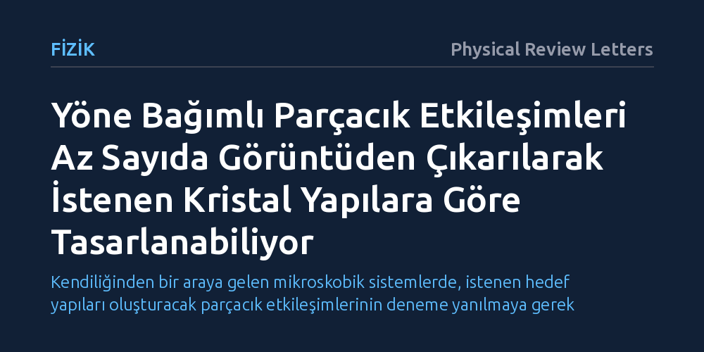

FIZIK · Physical Review Letters · 2026-10-12
Araştırmacılar, küresel olmayan parçacıkların karmaşık etkileşim kuvvetlerini yoğun sıvılardan hızla hesaplamanın bir yolunu aradı. Geliştirilen yöntemle bu kuvvetlerin az sayıda görüntüden çıkarılabildiği ve hedef yapıları oluşturacak biçimde tasarlanabildiği gösterildi.
Kendiliğinden bir araya gelen mikroskobik sistemlerde, istenen hedef yapıları oluşturacak parçacık etkileşimlerinin deneme yanılmaya gerek kalmadan geriye dönük hesaplanabileceğini gösteriyor.

Doğada ve laboratuvarda maddeler kendiliğinden bir araya gelerek kristaller veya karmaşık yapılar oluşturur. Ancak gerçek dünyadaki parçacıklar çoğu zaman mükemmel birer küre değildir; şekilleri ve uyguladıkları kuvvetler baktıkları yöne göre değişir. Örneğin su moleküllerinden karmaşık proteinlere ve yapay koloidlere kadar pek çok yapı, birbirlerini yalnızca mesafeye göre değil, birbirlerine hangi açıyla durduklarına göre de çeker ya da iter. Fizikçilerin karşılaştığı temel zorluk, bir sıvının içinde birbirine çarpan bu yöne bağımlı parçacıkların gerçekte nasıl bir kuvvet profiliyle etkileştiğini deneysel olarak ya da simülasyonlarla doğrudan ortaya çıkarmanın son derece güç olmasıydı.
Bu etkileşimleri tam olarak bilmeden, parçacıkların kendi kendine hangi yapıyı kuracağını önceden kestirmek neredeyse imkânsızdır. Klasik yöntemler genellikle parçacıkları her yönde aynı davranan basit küreler gibi varsayar ya da çok uzun zaman alan karmaşık hesaplamalara dayanır. Araştırmacılar bu nedenle temel bir sorunun peşine düştü: Sıvı içindeki karmaşık ve yöne bağımlı kuvvetleri yalnızca birkaç anlık görüntüye bakarak doğrudan ve hızlı bir biçimde haritalamak mümkün olabilir mi?
Araştırma ekibi bu soruyu yanıtlamak için istatistiksel fizikte uzun süredir kullanılan test parçacığı yerleştirme tekniğini temel aldı. Bu klasik yöntemde, dengedeki bir sıvının içine sanal bir parçacık sokulduğu hayal edilir ve bu eklemenin sisteme ne kadarlık bir enerji maliyeti getirdiği hesaplanır. Ancak geleneksel yaklaşım yalnızca simetrik ve küresel parçacıklar için tasarlanmıştı. Ekip, bu yöntemi yöne bağımlı sistemleri de kapsayacak biçimde genişleterek yeni bir teorik çerçeve geliştirdi.
Geliştirilen yöntemin en büyük teknik avantajı, sanal parçacık yerleştirme işlemlerinin birbirinden bağımsız olarak aynı anda hesaplanabilmesidir. Araştırmacılar bu paralelleştirme özelliğini yüksek başarımlı bilgisayarlarla birleştirerek hesaplama süresini ciddi ölçüde kısalttı. Yöntemin gücünü sınamak için hem yoğun sıvıların bilgisayar simülasyonlarını hem de gerçek koloidal süspansiyon deneylerini kullandılar. Üstelik sistemin dengede olduğu yalnızca az sayıda anlık mikroskobik görüntü üzerinden etkileşim potansiyellerini yeniden inşa etmeyi denediler.
Yapılan testler, yeni yöntemin yoğun sıvılardaki karmaşık ve yöne bağımlı etkileşimleri az sayıda görüntüden bile nicel bir doğrulukla çıkarabildiğini kanıtladı. Yöntem yalnızca bilgisayar modellerinde değil, laboratuvarda mikroskop altında gözlemlenen koloidal deneylerde de birebir doğrulandı. Dahası, araştırmacılar yöntemde küçük uyarlamalar yaparak aynı tekniğin katı kristal kafeslerdeki parçacık etkileşimlerini ölçmek için de başarıyla kullanılabileceğini gösterdi.
Çalışmanın en dikkat çekici adımı ise ölçüm ile tasarım arasındaki teorik bağı kurmak oldu. Bir parçacığın nasıl etkileştiğini ölçebilen matematiksel çerçeve, tersten işletildiğinde istenen yapıyı kuracak etkileşimi üretmek için de kullanılabiliyordu. Araştırmacılar bu prensipten yararlanarak parçacıkları bal peteği kafesi, kagome örgüsü ve on iki katlı simetriye sahip kuazi-kristaller gibi hedeflenen özel düzenlere sokacak etkileşim kurallarını başarıyla hesapladı. Yazarlar bu yaklaşımın "kendiliğinden düzenlenen sistemlerin tersine tasarımında yeni bir yol açtığını" belirtiyor.
Bu bulgular, mikroskobik ölçekte kendi kendine bir araya gelen sistemlerin tasarımında önemli bir metodolojik adımı temsil ediyor. Geleneksel yaklaşımlarda belirli bir kristal deseni elde etmek için farklı kimyasal etkileşimler deneme-yanılma yoluyla test edilirken, bu yöntemle istenen nihai yapı belirlenip parçacıkların sahip olması gereken kuvvet profili doğrudan hesaplanabiliyor.
Yine de yöntemin pratik uygulamaları önünde bazı sınırlar bulunuyor. Matematiksel olarak hesaplanan yöne bağımlı kuvvetlerin laboratuvarda kimyasal veya fiziksel olarak parçacık yüzeyine kusursuzca aktarılması başlı başına deneysel bir uzmanlık gerektiriyor. Ayrıca hesaplamaların yüksek başarımlı bilgisayar gücüne bağımlı olması ve katı yapılar için ek teorik düzenlemelere ihtiyaç duyması, yöntemin yaygınlaşma sürecinde aşılması gereken teknik basamaklar olarak öne çıkıyor.